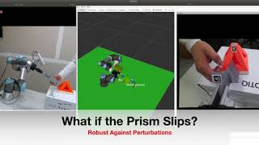
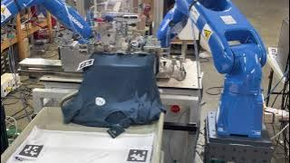

|
Nan Tian I'm a passionate robotics research scientist in San Francisco, NeRF. At Google I've worked on Glass, Lens Blur, HDR+, VR, Portrait Mode, Portrait Light, and Maps. I did my PhD at UC Berkeley, where I was advised by Jitendra Malik. I've received the PAMI Young Researcher Award. |

|
ResearchI'm interested in Machine Learning, Robotics AI, Cloud Robotics, Interactive 3D Vision, VR/AR Teleoperation; Previously Medical imaging and Brain Machine Interface; PhD in CS from UC Berkeley." # I hold a PhD in CS from UC Berkeley" #In my previous life, I also researched in Brain Machine Interface and Biomedical Imaging (MRI). Some papers and projects are highlighted. |
Dynamic Visual Manipulation |
|
|
Intuitive Dynamic Teleoperation in Mixed Reality via Cloud Robotics
Michael Wang, Nick Feffer, Nan Tian Bosch CR President demo, 2022 Cloud and Fog Robotics, ICRA 2024 Worhshop project page Safely control a dynamic robot arm like you were playing a video game, in mixed reality with Hololens. Reactive, collision free motion planner (MPPI) hosted in the Cloud with GPU and Omniverse. |
|

|
Dynamic Visual Servo for Robust Prism Insertion
Nan Tian Nikon CTO Presentation & Demo 2020 Nikon Research Corporation of America Full Video Position based visual servoing to perform prism insertion. Controlling the robot arm based on relative 3D pose between objects (instead of relative to the arm end-effector), the insertions are robust and precise even when either object slips or moves at any time. |

|
Dynamic Motion Primitives for Humanoid Object Pickups
Nan Tian MWC 2019 CTO Demo, CloudMinds Technology Demo Video (26-47 sec) Leverage dynamic motion primitive and few shots imitation learning to control a newly designed humanoid robot to pickup a coffee cup from random locations and handover to different people during the MWC demo. The visual control policy was learnt from only a few human demonstrations. |
Graspings and Pick-n-Place |
|

|
Dynamic Visual Servo for Robust Prism Insertion
Nan Tian Nikon CTO Presentation & Demo, Nikon Research Corporation of America Full Video Position based visual servoing to perform prism insertion. Controlling the robot arm based on relative 3D pose between objects (instead of relative to the arm end-effector), the insertions are robust and precise even when either object slips or moves at any time. |
Miscellanea |


|
Feel free to steal this website's source code. Do not scrape the HTML from this page itself, as it includes analytics tags that you do not want on your own website — use the github code instead. Also, consider using Leonid Keselman's Jekyll fork of this page. |